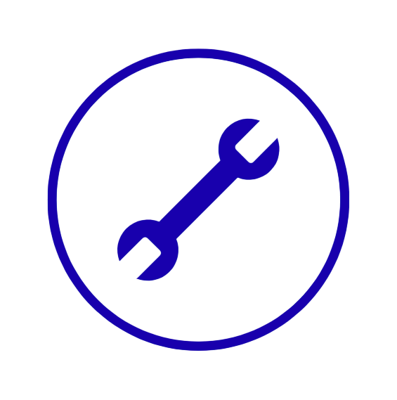
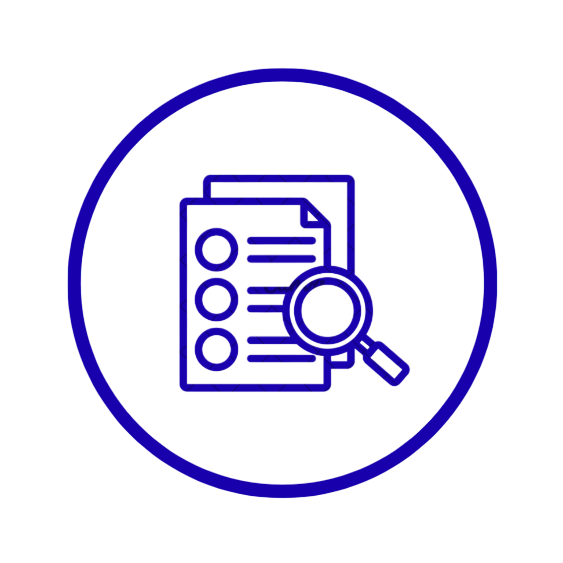

Online Teknik Servis Programı; bilgisayar, tablet ya da cep telefonundan kolayca erişilebilir. Bulut/internet tabanlı yapısı sayesinde her an, her yerden işlemlerinizi yönetebilirsiniz.

GENİŞ SERVİS TAKİP SİSTEMİ
Onarım, teslimat, iptal ve fiyatlandırma dahil olmak üzere tüm teknik servis süreçlerini tek ekrandan hızlıca takip etmenizi sağlar. Zaman tasarrufu sunar, iş yükünüzü azaltır.

DETAYLI CİHAZ KAYITLARI
Marka, model, seri numarası, arızalı parça, garanti durumu ve işlem yapan personel gibi birçok detayı içeren kapsamlı servis kayıtları oluşturabilirsiniz.
Bulut Teknik Servis Programı
Bilsoft Bulut Hibrit Teknik Servis Programı, tüm servis kayıtlarınızı, müşteri işlemlerinizi ve operasyonel süreçlerinizi her yerden güvenli ve hızlı bir şekilde yönetmenize olanak tanır.
Güçlü özellikleri sayesinde servis süreçlerini, envanter takibini, fatura işlemlerini ve daha birçok işlemi kolayca kontrol edebilirsiniz.
Bilsoft Bulut Hibrit Teknik Servis Programı, Bilsoft Ön Muhasebe Programı ile tam bir entegrasyon içinde çalışır. Bu entegrasyon, muhasebe programınızdaki stok ve cari hesap bilgilerini teknik servis modülünde sorunsuz bir şekilde görüntülemenize olanak tanır.
Her servis kaydı için detaylı ürün kabul formu ve servis fişi oluşturabilirsiniz. Bu formlarda ürün bilgileri, müşteri talepleri, arıza açıklamaları ve işlem detayları yer alır.
Sistem üzerinden müşterilere SMS veya e-posta ile servis durumu hakkında bilgilendirme gönderilebilir. Online Takip sistemi ile kullanıcılarınız ürün durumunu anlık takip edebilir.
Her servis işlemi için sorumlu personel atanabilir. Böylece işlem takibi kolaylaşır ve personel performansı izlenebilir hale gelir.
Program; elektronik, beyaz eşya, bilgisayar, cep telefonu, güvenlik sistemleri, medikal cihazlar ve teknik servis hizmeti veren tüm sektörler için uygundur. Modüler yapısı sayesinde ihtiyaçlara göre uyarlanabilir.
Evet, Bilsoft Teknik Servis Programında kullanıcıları yetkilendirebilirsiniz. Program, çeşitli kullanıcı rolleri ve yetkilendirmeleri ayarlama imkanı sunar, böylece farklı kullanıcıların sisteme erişim düzeylerini ve hangi işlevleri gerçekleştirebileceklerini özelleştirebilirsiniz. Bu yetkilendirme sistemi, işletmenizin ihtiyaçlarına göre yapılandırılabilir ve bu sayede veri güvenliği ile iş akışınızın etkin bir şekilde yönetebilirsiniz.